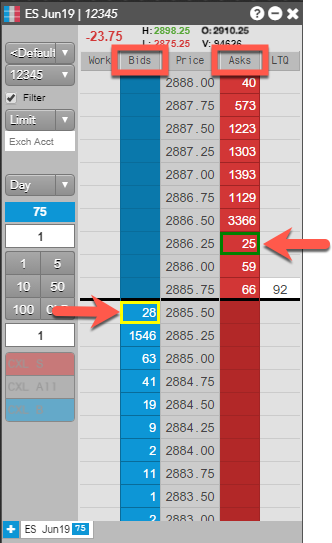
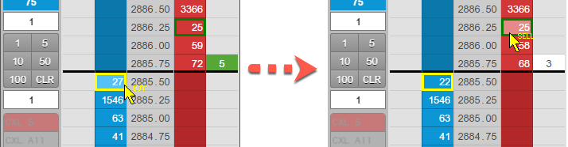
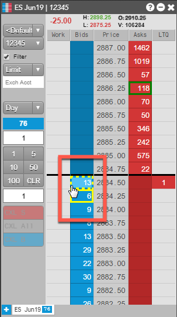

In addition to click-trading in MD Trader using a mouse, you can use the keyboard to make trades. Enabling keyboard trading provides an alternative method for submitting orders and does not disable the mouse.
Note: The hotkeys functionality must be enabled in your workspace in order to use keyboard trading in MD Trader.
You can enable or disable keyboard trading for each MD Trader widget using the local settings: right-click in MD Trader, select Settings: MD Trader, check the Keyboard trading checkbox and click Save. You can enable keyboard trading for all MD Traders in your workspace or for all future MD Traders by using the Defaults page in the local settings.
When enabled, yellow (buy side) and green (sell side) boxes appear as markers in the Bids and Asks columns.

When you hover on a marker, the cursor displays "Buy" or "Sell" based on which side of the market you're on.

As you move the cursor to different Bid and Ask cells, the cursor displays a dotted line around each cell to indicate where the marker can be placed.

If you hold down the Ctrl key, left clicks on Bid and Ask cells away from the markers do not submit orders, but instead move the buy/sell marker to that price level. An order is submitted at that price level by pressing the assigned hotkey to buy or sell, or by clicking again in the same cell.
Note: Mouse click actions to cancel orders in MD Trader are still executed while in keyboard trading mode.
With focus on MD Trader, you can press hotkeys on your keyboard to execute trading commands.
{% include mdt-keyboard.html %}